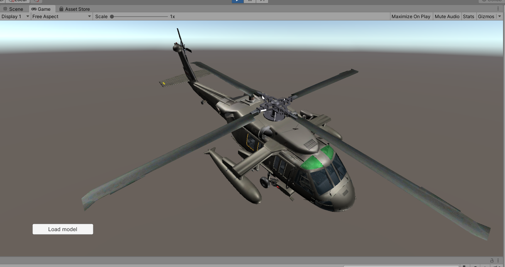

Overview
One possible custom scenario is to use CAD Exchanger together with the Unity game engine. CAD Exchanger supports integration with Unity game engine for the purpose of loading models in formats not supported by Unity itself.

Example of model imported with CAD Exchanger add-on
Conversion of models to Unity objects
CadExUnity is a CAD Exchanger SDK module that allows you to convert ModelData_Model to Unity's GameObjects.
- Note
- Since Unity scripts are implemented in C#, the CadExUnity module is only available as a .NET library.
ModelData_Model is mapped to Unity objects as follows:
- Product structure is mapped to the hierarchy of GameObjects, implemented via parent-child relationships.
- The geometry is stored in Unity.Mesh.
- Appearance attributes are converted to Unity.Material.
- Note
- Since Unity does not support B-Rep geometry, for all models that do not contain a polygonal representation, the BRep-representation will be converted to polygons.
To perform the conversion one must use Unity_ObjectFactory.Create() which takes the ModelData_Model and an optional name and returns GameObject.
The following example demonstrates a typical workflow:
using UnityEngine;
...
aReader.ReadFile(new Base_UTF16String("MyModel.stp"));
ModelData_Model aLoadedModel = new ModelData_Model();
aReader.Transfer(aLoadedModel);
Unity_ObjectFactory aFactory = new Unity_ObjectFactory();
GameObject aTarget = aFactory.Create (aLoadedModel, "MyModel.stp");
...
To display sheet models correctly CAD Exchanger Unity plugin provides a special shader: CadEx2sideShader.SHADER. It can be found in ${install_dir}/examples/csharp/Unity/Assets/Shaders folder.
- Note
- You can copy this shader into your own project to obtain the same rendering results as in the example.
Otherwise the "Standard" shader will be used.
Building
CadEx Unity works with two shaders: "CadEx2sideShader" and "Standard" (standard Unity Shader). To build your project successfully, at least one of them must be added to your shadervariants file.
- Note
- You can use the ready made shadervariants file residing here:
${install_dir}/examples/csharp/Unity/Assets/Shaders/CadExUnityShaderVariants.shadervariants.
To do this add this file to your project and specify it in the Build settings->Player Settings->Graphics->Preloaded Shaders.
Examples
Refer to Unity Base Viewer Example, Unity PMI Viewer Example, Unity Edit Mode Import Example, Unity Edit Mode Export Example